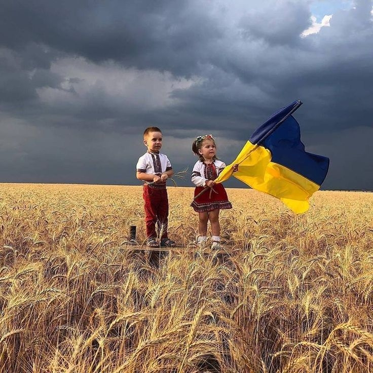

Україна: Серце Європи
Україна — це держава в Східній Європі, яка має багату історію, унікальну культуру та стратегічне географічне положення. Вона є найбільшою за площею країною Європи, займаючи понад 603 тисячі квадратних кілометрів. Україна межує з Польщею, Словаччиною, Угорщиною, Румунією, Молдовою, Білоруссю та Росією, а її південний кордон омивається Чорним та Азовським морями.

Історія та культурна спадщина
Україна має давню історію, коріння якої сягають часів Київської Русі (IX-XIII століття) — могутньої держави, яка стала колискою східнослов’янської цивілізації. Після періоду монгольської навали українські землі довгий час перебували під владою різних держав, зокрема Великого князівства Литовського, Речі Посполитої та Російської імперії. У XX столітті Україна пережила важкі випробування, включаючи Голодомор 1932–1933 років, Другу світову війну та радянську окупацію.
24 серпня 1991 року Україна здобула незалежність, проголосивши вихід з Радянського Союзу. Відтоді країна пройшла складний шлях демократичних реформ та боротьби за свою територіальну цілісність і суверенітет, зокрема після подій Революції Гідності 2013–2014 років та подальшої російської агресії.
Природа та географія
Україна відзначається різноманітністю природних ландшафтів. На півночі розташовані густі ліси, у центральній частині — родючі чорноземи, які роблять країну однією з найбільших виробників зерна у світі.
Карпати на заході та Кримські гори на півдні додають Україні мальовничих краєвидів та приваблюють туристів.
Сучасна Україна
Сьогодні Україна продовжує боротьбу за свою незалежність та територіальну цілісність, водночас розвиваючи економіку, культуру та міжнародні відносини. Країна має значний науковий, технічний та людський потенціал і прагне стати повноправним членом європейської спільноти.
Україна — це не лише держава з багатою історією та культурою, а й країна, яка відстоює свої цінності, свободу та майбутнє у сучасному світі.
-
Україна
- Україна
-
Україна
- Україна
- Україна
- Україна
- Україна
- Україна
- Україна
- Україна
text
text
text
text